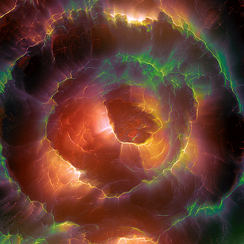
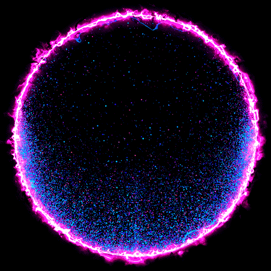
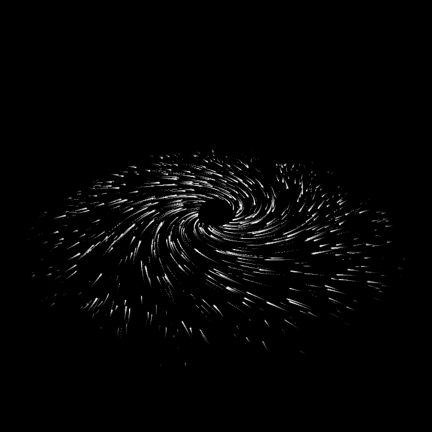
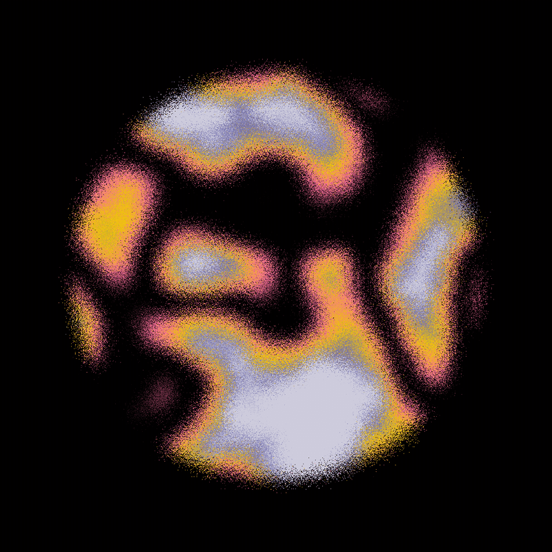
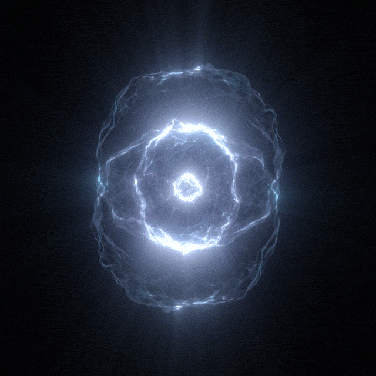
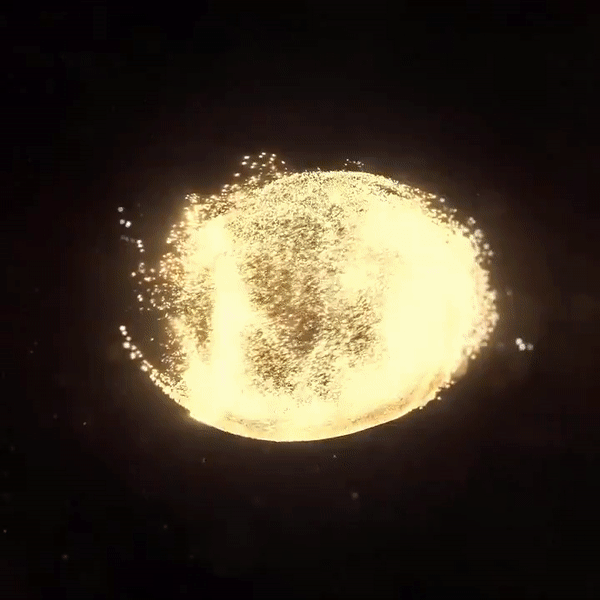
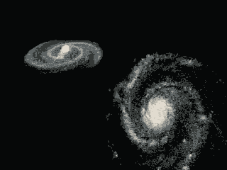
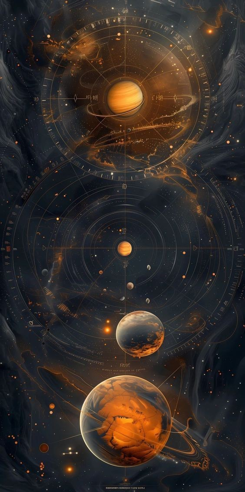

01. The Big Bang
13.8 billion years ago, everything began as a "singularity"—a point of infinite heat and density. In a rapid growth spurt called Inflation, space expanded exponentially in a tiny fraction of a second.
You awaken in an infinite void. No stars. No light. Only silence… until reality begins to form around your consciousness.
A cinematic exploration of the 13.8 billion year voyage of our universe.

13.8 billion years ago, everything began as a "singularity"—a point of infinite heat and density. In a rapid growth spurt called Inflation, space expanded exponentially in a tiny fraction of a second.

The universe was a "Quark Soup," too hot for matter to exist. As it cooled, a tiny imbalance between matter and antimatter allowed matter to survive, eventually forming the first protons and neutrons.

380,000 years later, the universe cooled enough for neutral atoms to form. The "fog" cleared, and light traveled freely for the first time. This echo is still visible today as the Cosmic Microwave Background (CMB).

For millions of years, the universe was dark. There were no stars, only vast clouds of hydrogen and helium gas waiting for the invisible tug of Dark Matter to pull them together.

Gravity eventually won. The first stars (Population III) ignited, clustering into the first galaxies. Their ultraviolet light reionized the gas, finally clearing the cosmic haze.

The first stars died in violent supernovas, forging carbon, oxygen, and iron. These elements seeded the cosmos, providing the "stardust" needed to build later stars and planets.

4.6 billion years ago, a nebula collapsed to form our Sun and Earth. By 3.8 billion years ago, simple life emerged, evolving into complex beings capable of wondering about their origins.

Today, Dark Energy accelerates expansion. One day, the universe may end in a cold "Heat Death" as the last stars burn out and space drifts apart. But before the lights fade, the vastness of the present remains yours to explore. Step through the portals to witness the wonders that exist in our fleeting moment of cosmic time.

